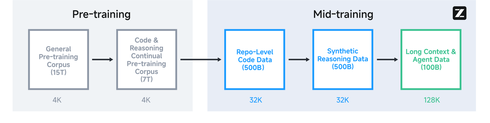
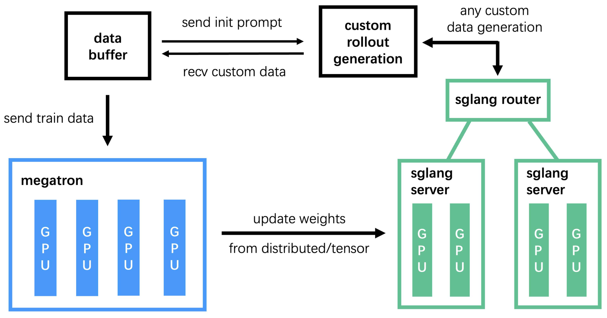

核心一句话：与其追求「样样都会」，不如把「智能体 + 推理 + 代码」当成同一个能力底座来训练——GLM-4.5 用「窄而深的 MoE + 多阶段训练 + 专家模型迭代 RL」证明了：开源模型也能在这三件最难的事上同时接近最强闭源模型。
大模型正从「知识库」进化为「通用问题求解器」。但作者认为，要衡量一个模型是否真正通用，关键看三类彼此交织的核心能力——而过去这三件事往往被分开优化、互相牵制。
论文开门见山地把这三类能力定义为模型走向 AGI 的「试金石」：
"Agentic abilities for interacting with external tools and the real world; complex Reasoning for solving multi-step problems… and advanced Coding skills for tackling real-world software engineering tasks." 这三类能力（ARC）相互关联、缺一不可，是「真正通才」的度量标准。
最强的闭源模型（OpenAI o1/o3、Anthropic Claude Sonnet 4）确实在某一个 ARC 维度上很突出——要么擅长数学推理，要么擅长改代码。但论文指出：一个在三方面同时出色的开源模型，一直是缺失的（remained elusive）。开源阵营要么偏科，要么靠堆参数取胜，参数效率不高。
GLM-4.5 给出的答案不是「再训一个更大的模型」，而是从架构、数据到训练范式都围绕「ARC 统一」来设计：用一个混合推理（hybrid reasoning）的 MoE 模型，既能「想清楚再答」，也能「即时回复」，并通过「先分头训练专家、再蒸馏融合」的方式把三种能力装进同一套权重。下面按论文自身的结构展开：预训练 → 后训练 → RL 基建 → 实验。
<think>…</think> 推理再作答，适合难题与工具调用；non-thinking 模式跳过思考直接回答，适合闲聊等需要低延迟的场景。关键挑战是让同一套权重学会两种模式，这正是后训练阶段要解决的问题。
GLM-4.5 系列首次采用 MoE（混合专家）架构来提升训练与推理的计算效率，并使用 loss-free balance routing（无损均衡路由）和 sigmoid 门控。和 DeepSeek-V3、Kimi K2 不同，作者做了几个有意思的反直觉选择：
"we reduce the width… and increase its height (number of layers), as we found that deeper models exhibited better reasoning capacity." 减宽增深——因为更深的模型展现出更强的推理能力。这是 GLM-4.5 架构选择的核心直觉。
| 参数 | GLM-4.5 | GLM-4.5-Air | DeepSeek-V3 | Kimi K2 |
|---|---|---|---|---|
| 总参数 | 355B | 106B | 671B | 1043B |
| 激活参数 | 32B | 12B | 37B | 32B |
| 稠密层数 | 3 | 1 | 3 | 1 |
| MoE 层数 | 89 | 45 | 58 | 60 |
| MTP 层数 | 1 | 1 | 1 | 0 |
| 隐藏维度 | 5120 | 4096 | 7168 | 7168 |
| 注意力头数 | 96 | 96 | 128 | 64 |
| KV 头数 | 8 | 8 | 128 | 64 |
| 专家总数 | 160 | 128 | 256 | 384 |
| 每 token 激活专家 | 8 | 8 | 8 | 8 |
| 共享专家 | 1 | 1 | 1 | 1 |
| QK-Norm | 是 | 否 | 否 | 否 |
注：参数统计含 MTP 层，但不含词嵌入与输出层。可见 GLM-4.5「层数多（89 MoE 层）、宽度小（5120）、头多（96）」的「窄而深」特征。
预训练语料来自网页、社交媒体、书籍、论文和代码仓库，每类来源都有专门的处理流程：
预训练之后，作者没有直接进入后训练，而是插入若干 中训练（mid-training）阶段——用中等规模、领域专门的数据集（含指令数据）进一步拔高关键能力，并把序列长度从 4K 一路扩到 128K：

这是 GLM-4.5 把 ARC 三种能力装进同一套权重的关键。后训练被拆成两个阶段：先训出各有所长的专家模型，再把它们融合成一个混合推理通才。
键值用 <arg_key> / <arg_value> 标签包裹，参数里的代码无需大量转义：
<tool_call>get_weather <arg_key>city</arg_key> <arg_value>Beijing</arg_value> <arg_key>date</arg_key> <arg_value>2024-06-27</arg_value> </tool_call> <observation> <tool_response> {"city": "Beijing", "date": "2024-06-27", "weather": "Sunny", "temperature": "26C"} </tool_response>
对话角色用 <|system|>、<|user|>、<|assistant|>、<|observation|> 等特殊 token 标记；思考过程包在 <think>…</think> 内。
GLM-4.5 的 RL 整体基于 GRPO 框架（去掉 KL 损失项）。论文按能力类型把 RL 拆成三块，每块都有针对性的「踩坑经验」。注意：以下许多对比曲线来自更小的实验模型，便于快速消融。
推理任务的特点是奖励信号高度精确——对错往往能用程序客观判定。作者发展了一套专门技巧：
作者把重心放在网页搜索与代码生成两类智能体上，因为它们的每一步动作或最终答案都能自动校验，从而提供密集可靠的奖励，便于把 RL 规模做大。
作为后训练的收尾，通用 RL 用多源反馈整体打磨：规则反馈（精确）、人类反馈 RLHF（细腻判断）、模型反馈 RLAIF（可扩展）三者融合。它包含：
对每个问题 x，从旧策略采样 K 条轨迹，按「相对组内平均奖励」的优势来优化（组级策略优化）：
L_RL(θ) = E_{x~D} [ (1/K) Σ_i ( r(x, y_i) − r̄(x) ) ]
其中 r̄(x) = (1/K) Σ_i r(x, y_i) // 组内平均奖励
关键细节：只有模型生成的 token 参与优化，环境反馈（工具返回内容）不计入损失——避免模型去「拟合」自己无法控制的环境输出。
大规模智能体 RL 的最大瓶颈是数据生成（rollout）效率：智能体要和复杂环境长时间交互，轨迹长短不一，同步训练时整条流水线会被最慢的 rollout 拖死。GLM-4.5 的 RL 跑在自研开源框架 slime（THUDM/slime）上。

在覆盖 ARC 三类能力的 12 个标准基准上，GLM-4.5 综合排名第 3（仅次于头部闭源模型），智能体任务第 2（仅次于 OpenAI o3），代码任务第 3（紧追 Claude Sonnet 4）；GLM-4.5-Air 综合第 6。而它的参数量只有 DeepSeek-R1 的一半、Kimi K2 的三分之一。
分项亮点（均来自论文表 3–5）：
| 基准 | GLM-4.5 | GLM-4.5-Air | o3 | Claude Opus 4 | Gemini 2.5 Pro | DeepSeek R1-0528 |
|---|---|---|---|---|---|---|
| MMLU-Pro | 84.6 | 81.4 | 85.3 | 87.3 | 86.2 | 84.9 |
| AIME 24 | 91.0 | 89.4 | 90.3 | 75.7 | 88.7 | 89.3 |
| MATH 500 | 98.2 | 98.1 | 99.2 | 98.2 | 96.7 | 98.3 |
| SciCode | 41.7 | 37.3 | 41.0 | 39.8 | 42.8 | 40.3 |
| GPQA | 79.1 | 75.0 | 82.7 | 79.6 | 84.4 | 81.3 |
| HLE | 14.4 | 10.6 | 20.0 | 11.7 | 21.1 | 14.9 |
| LCB | 72.9 | 70.7 | 78.4 | 63.6 | 80.1 | 77.0 |
| 基准 | GLM-4.5 | GLM-4.5-Air | o3 | Claude Sonnet 4 | Claude Opus 4 | Kimi K2 |
|---|---|---|---|---|---|---|
| TAU-Retail | 79.7 | 77.9 | 70.4 | 80.5 | 81.4 | 73.9 |
| TAU-Airline | 60.4 | 60.8 | 52.0 | 60.0 | 59.6 | 51.2 |
| BFCL v3 | 77.8 | 76.4 | 72.4 | 75.2 | 74.4 | 71.1 |
| BrowseComp | 26.4 | 21.3 | 49.7 | 14.7 | 18.8 | 7.9 |
| SWE-bench Verified | 64.2 | 57.6 | 69.1 | 70.4 | 67.8 | 65.4 |
| Terminal-Bench | 37.5 | 30.0 | 30.2 | 35.5 | 43.2 | 25.0 |
SWE-bench Verified 用 OpenHands v0.34.0 评测（temperature=0.6, top_p=1.0，限 100 轮）。BrowseComp 上 OpenAI o3 一骑绝尘，但 GLM-4.5 仍显著优于多数模型。
"GLM-4.5 excels at reasoning, coding, and agentic tasks, ranked in 3rd place globally among open-source and proprietary models." GLM-4.5 在推理、代码、智能体三类任务上俱佳，在所有开源与闭源模型中综合排名第 3——并以开源、参数高效的姿态证明了「ARC 统一」这条路走得通。